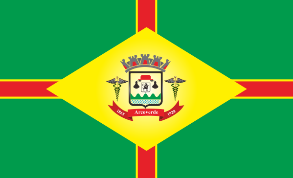

Em plena caatinga, nas proximidades da serra da Aldeia Velha, surgiram as fazendas Bredos e Olho D'água, pertencentes a João Nepomuceno de Siqueira Melo e Manoel Pacheco do Couto. Em 1865, Leonardo Couto, filho de Manoel Pacheco do Couto, criou o povoado de Olho D'água dos Bredos, quando doou terras e construiu a capela de Nossa Senhora do Livramento. Em 1909 Olho D'água dos Bredos tomou o nome de Rio Branco. Com a criação da agência postal e a inauguração da Estrada de Ferro ligandoo à Capital do Estado, intensificouse o comércio e, em 1928, Rio Branco elevouse à categoria de Município. Teve o nome mudado para Arcoverde, em 1943, homenagem a D. Joaquim de Albuquerque Cavalcanti Arcoverde, nascido no lugar e o primeiro Cardeal da América Latina.
